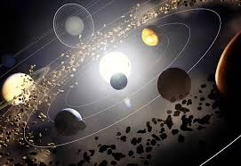

|  |
CINTURÃO DE ASTERÓIDES (CINTURÃO DE KUIPER)
- É um conjunto de milhões de pedregulhos espaciais que giram em torno do Sol, entre as órbitas de Marte e Júpiter.
- São considerados planetas os corpos celestes que, além de outras características, têm a órbita livre, ou seja, não possuem outros corpos celestes na mesma órbita
- Alguns asteróides podem escapar do cinturão quando atraídos pela gravidade de algum planeta, ou mesmo pela gravidade do sol, se sua órbita sofrer algum tipo de perturbação. Neste caso, ele pode chegar a colidir com este planeta, ou com o sol, ou então ficar em órbita deste, como um satélite.
- O cinturão de asteróides se formou, provavelmente da colisão de diversos corpos maiores que, ao colidir, se partiram em diversos pedaços menores ainda na época de formação do sistema solar e continuam colidindo entre si enquanto permanecem no cinturão.
-Mais da metade da massa total da cintura está contida nos quatro objetos de maior tamanho: Ceres, 4 Vesta, 2 Palas e 10 Hígia.
- Vesta é, atualmente, o maior asteroide conhecido. Possui 560 km de diâmetro.
- O cinturão esta localizado entre 1,5 e 5 unidades astronômicas (UA) da Terra. Cada UA equivale a 150 milhões de quilômetros, distância média entre a Terra e o Sol.
|